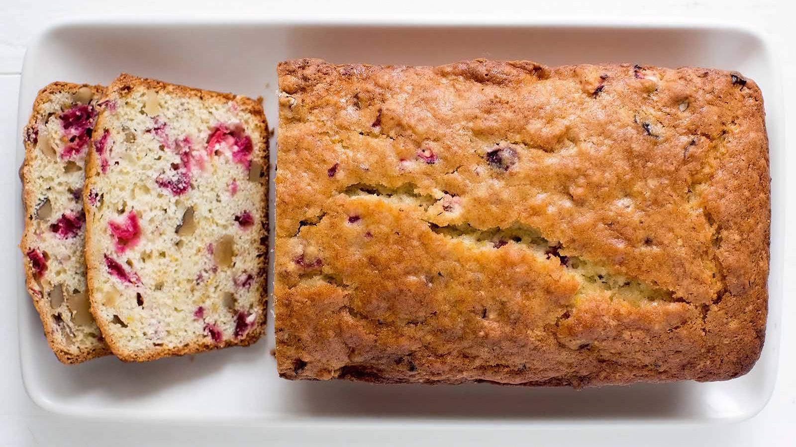

The Best Cranberry Orange Bread

A dense breakfast bread with the wonderful taste of cranberries. It's perfect for a holiday brunch
Ingredients
- 1 ⅛ cups orange juice
- 2 tablespoons vegetable oil
- 2 tablespoons honey
- 3 cups bread flour
- 1 tablespoon dry milk powder
- ½ teaspoon ground cinnamon
- ½ teaspoon ground allspice
- 1 teaspoon salt
- 1 (.25 ounce) package active dry yeast
- 1 tablespoon grated orange zest
- 1 cup sweetened dried cranberries
- ⅓ cup chopped walnuts
Steps
- Place ingredients in the pan of the bread machine in the order recommended by the manufacturer. Select cycle; press Start
- If your machine has a Fruit setting, add the cranberries and nuts at the signal, or about 5 minutes before the kneading cycle has finished.